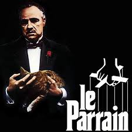

ゴッドファーザー
「ゴッドファーザー」は、アメリカのイタリア系マフィア一家であるコルレオーネ家を中心に繰り広げられる物語です。 物語は、コルレオーネ家の当主であり、ゴッドファーザーと呼ばれるヴィト・コルレオーネが暗殺未遂に遭うことから始まります。 この事件をきっかけに、一家の後継者問題や権力争いが浮き彫りとなり、家族と犯罪組織の両方での激しい戦いが展開されます。
「ゴッドファーザー」は、アメリカのイタリア系マフィア一家であるコルレオーネ家を中心に繰り広げられる物語です。 物語は、コルレオーネ家の当主であり、ゴッドファーザーと呼ばれるヴィト・コルレオーネが暗殺未遂に遭うことから始まります。 この事件をきっかけに、一家の後継者問題や権力争いが浮き彫りとなり、家族と犯罪組織の両方での激しい戦いが展開されます。
ワイルド・スピードは、カーアクションとファミリーの絆をテーマにした大人気映画シリーズです。 ロサンゼルスのストリートレースから始まり、世界を舞台にした壮大な物語へと発展しました。 個性的なキャラクターたちの成長や、迫力満点のカーアクションが見どころです。
バットマン映画は、DCコミックス原作のスーパーヒーロー映画で、特に人気のあるキャラクター、バットマンの活躍を描いた作品群です。 バットマンは、犯罪都市ゴッサムシティを舞台に、コウモリを模した姿で悪と戦う闇のヒーローで。 特殊能力を持たない代わりに、卓越した知力、格闘能力、そして様々なハイテクガジェットを駆使して戦います